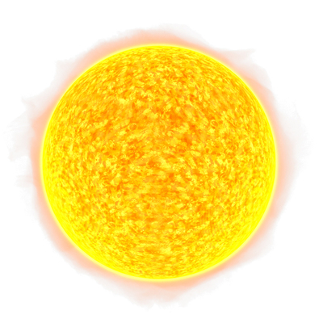

The Sun is a large, glowing ball of hot gases at the center of our solar system. It is mostly made of
hydrogen and helium and produces light and heat through a process called nuclear fusion. This energy
supports life on Earth and helps sustain our weather and climate. The Sun is about 93 million miles away
from Earth but is still the brightest object in our sky. Without the Sun, life would not exist. It also
helps plants grow through photosynthesis and gives us daylight to see and stay warm.
- The Sun is 149.6 million kilometers away.
- Its diameter is about 1.39 million kilometers.
- It makes up 99.8% of solar system mass.
- Sun's core temperature reaches 15 million degrees Celsius.
|
 |